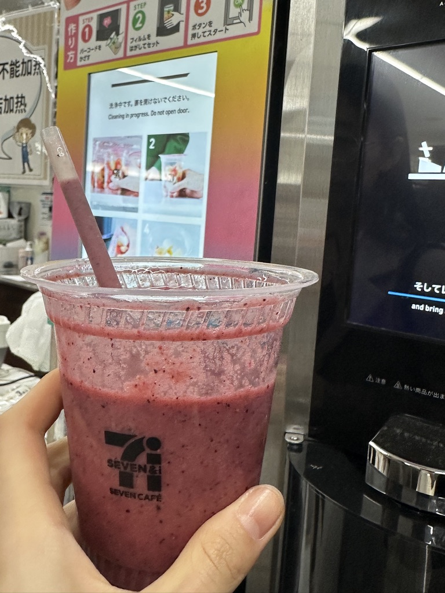
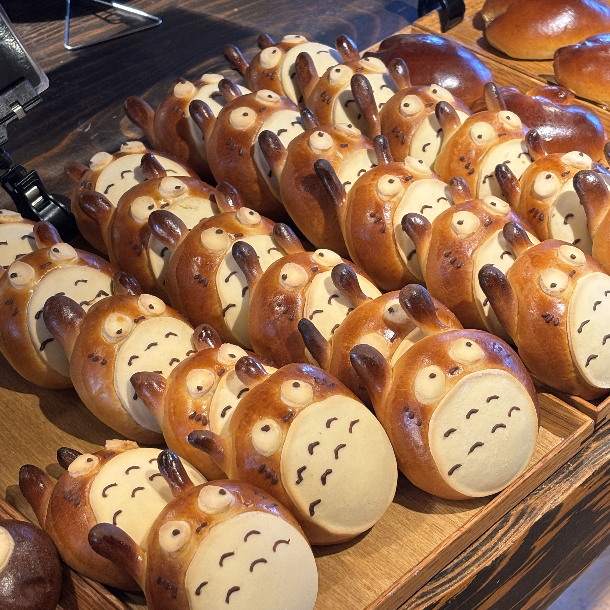
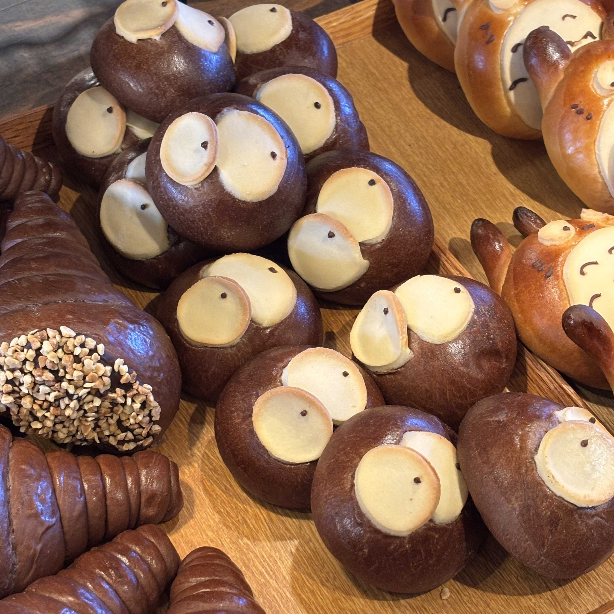
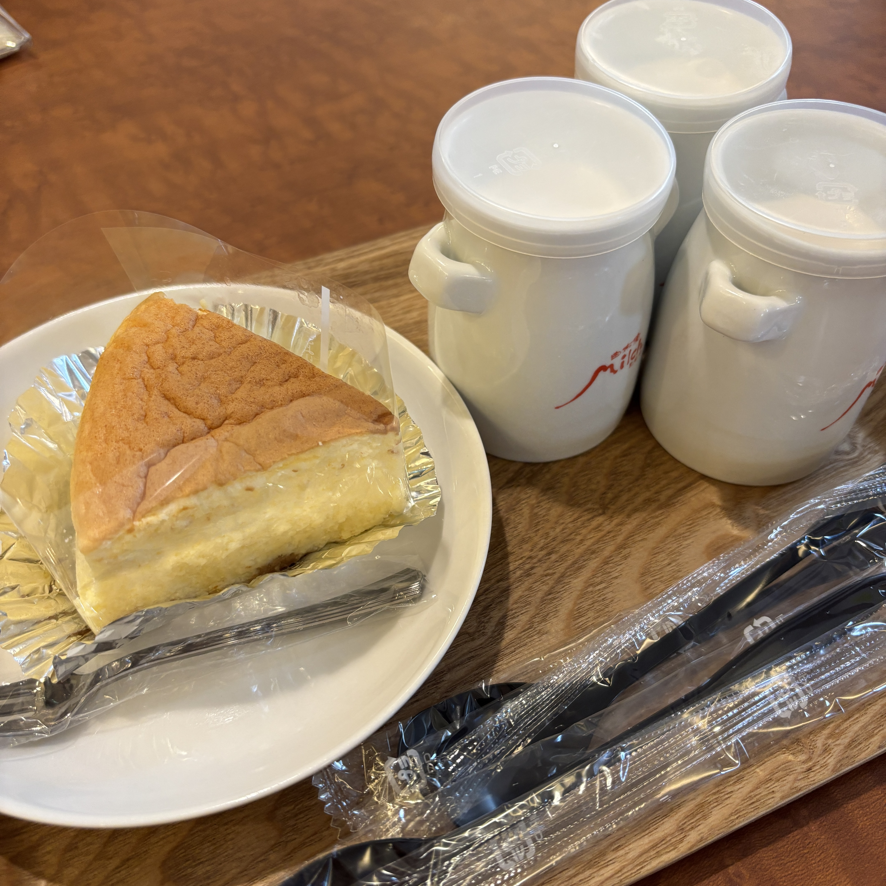
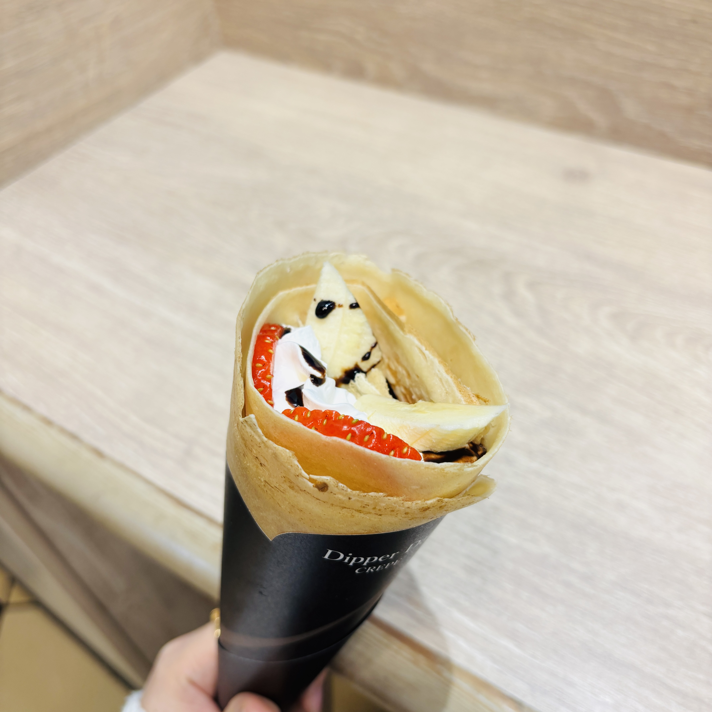

일본의 유명한 가게 및 맛집
| 가게 이름 | 세븐일레븐 편의점 |
|---|---|
| 주소 | 전국 곳곳에 존재 |
| 인기 메뉴 | 다양한 식사류 및 간식류 |
| 특징 | 4가지 맛의 스무디를 결제 후 직접 제조 가능 |
 
| 가게 이름 | Bread Mocca |
|---|---|
| 주소 | 1127-5 Yoshiimachi, Ukiha, Fukuoka 839-1321 일본 |
| 인기 메뉴 | 토토로 빵, 명란바게트 |
| 특징 | 지브리의 유명 애니메이션인 토토로를 모티브로 한 토토로 빵 판매 |

| 가게 이름 | 미르히 |
|---|---|
| 주소 | 3015-1 Yufuincho Kawakami, Yufu, Oita 879-5102 일본 |
| 인기 메뉴 | 치즈케이크와 푸딩 |
| 특징 | 저렴한 가격, 원하는 튀김 추가 주문 가능 |

| 가게 이름 | 디퍼 댄 크레페 |
|---|---|
| 주소 | 일본 〒812-0018 Fukuoka, Hakata Ward, Sumiyoshi, 1 Chome−2−22 キャナルシティオーパＢ１Ｆ |
| 인기 메뉴 | 크레페 |
| 특징 | 다양한 메뉴 존재, 신선한 생과일 사용 |